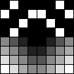
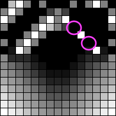

はじめに
インターフェース誌2015年6月号「超解像アルゴリズム」の記事を元に、全面的に*自分が*分かりやすいように解説し直します。
ICBI や iNEDI といったより良い手法もありますが、FCBI はそれらより処理が軽いので使い道はありますし、ICBI は FCBI をベースにしているので、知っておいて損はないです。
尚、こちらのエントリの続きです。
- エッジ判定型超解像アルゴリズム FCBI (Fast curvature based interpolation) 前編:デモプログラムの使い方
デモを見た方が実感が湧くはずですので、この記事を読む前に出来ればお試しください。
アルゴリズム概要
ポイント
- エッジが残るように勾配の少ない軸方向で補間する。
- 倍のサイズ(正確には倍-1)への拡大のみ。スケール微調整は不可。
- 尚、本家の参照実装(icbi.m)は 2*n-1 倍に対応しています。
- 画像によって適切な値が異なる閾値 TM を調整する必要がある。手動なり自動なり。
- モノクロ画像のアルゴリズム。つまり色差は見ない。
- イラスト画像は少し苦手 (最後の方で解説)
注意点
カラー対応
FCBI はモノクロ画像のアルゴリズムなので、カラフルな画像に対応する為に RGBA から計算した輝度 Y を用いました。JPEG の YCbCr の計算式を元にしてます。
- https://github.com/yoya/image.js/blob/v1.3/fcbi.js#L75
function lumaFromRGBA(rgba) { var [r,g,b,a] = rgba; var y = 0.299 * r + 0.587 * g + 0.114 * b; return y * a / 255; }
フィルタ行列
インターフェース誌の記事だと非エッジの勾配を調べる演算がフィルタ行列とのテンソル積()で示されますが、単なる畳み込みの計算なのでプログラム的には簡単です。
つまり、フィルターで場所に応じた重み付けをした足し算です。
abs - h1, h2
インターフェース誌の記事も FCBI を説明する様々な論文も端折ってますが非エッジの勾配を比較するのは、h1 < h2 でなく abs(h1) < abs(h2) です。 (このh1,h2 はインターフェース誌だと H1, H2。本家の参照実装だと展開されたベタな数式) 直感的にも abs を取らないと白い塗りと黒い塗りで結果が変わるでしょうし、参照実装(icbi.m)で abs で括っているのを確認済みです。
- https://github.com/yoya/image.js/blob/v1.3/fcbi.js#L231
if (Math.abs(h1) < Math.abs(h2)) { var rgba = meanRGBA(rgba1, rgba4); } else { var rgba = meanRGBA(rgba2, rgba3); }
既存のメソッドとの比較
画像の拡大では、ピクセルを広げて出来た隙間をどう埋めるのかが勝負です。
 =>
=> Nearest-Neighbor
近隣(Nearest-Neighbor)のピクセルをコピーします。

ちなみに丁度2倍の 6x4 だとこうなります。

Bi-Linear
線形(Linear)の計算で補間します。中学校で習う a と b の間の p 点 みたいな計算です。この例だと隣のピクセルを足して割る。つまり4隅または隣2つの平均値を用います。

RGB 値が色味に対して線形では無いので違和感のある結果ですが、そこは目を瞑って頂ければ。。RGB の数値的にはちゃんと平均、真ん中の値です。
FCBI
Bi-Linear の亜種とも言えます。Bi-Linear だと単純に上下左右の４つから混ぜますが、FCBI ではエッジをなるべく残すよう、４つのうち２つを選択して混ぜます。
FCBI の全体的な流れ
３つのフェーズで処理します。 Phase1 と Phase2 は同時に実行できますが、分かりやすいよう便宜的に分けます。
| 元画像 | Phase1 |
|---|---|
|
|
| Phase2 | Phase3 |
 |
大まかなアルゴリズム
詳細は後で、まず処理の大雑把な流れです。
Phase1
- ピクセルを2倍の座標で再配置する
Phase2
- 斜め隣を見てエッジかどうか判定する
- 非エッジの場合
- 周辺８ピクセルから勾配を判断して、勾配が少ない方の２ピクセルを混ぜる
- エッジの場合
- 斜め隣の２軸のうち勾配が少ない方の２ピクセルを混ぜる
- 斜め隣の２軸のうち勾配が少ない方の２ピクセルを混ぜる
- 非エッジの場合
Phase3
- 上下左右を見てエッジかどうか判定する
- 非エッジの場合
- 周辺８ピクセルから上下左右の勾配を判断して、勾配が少ない方の２ピクセルを混ぜる
- エッジの場合
- 上下、左右の２軸のうち勾配が少ない方の２ピクセルを混ぜる
- 非エッジの場合
各 Phase の詳細
Phase1: ピクセルを拡げる
単純にピクセルを2倍の座標で配置し直します。
=> function drawFCBI_Phase1(srcImageData, dstImageData, edgeMode) {
var dstWidth = dstImageData.width, dstHeight = dstImageData.height;
for (var dstY = 0 ; dstY < dstHeight ; dstY+=2) {
for (var dstX = 0 ; dstX < dstWidth ; dstX+=2) {
var srcX = dstX / 2; // srcX * 2 = dstX
var srcY = dstY / 2;
var rgba = getRGBA(srcImageData, srcX, srcY);
setRGBA(dstImageData, dstX, dstY, rgba);
}
}
}
この手の処理は dstImage の縦横座標を元にループ処理をして、srcImage の対応する色を引っ張ってくるのが王道です。 ただ、今回のケースは丁度2倍でキリが良いので srcImage でループしても良いです。
- もう一つの方法
function drawFCBI_Phase1(srcImageData, dstImageData, edgeMode) { var srcWidth = srcImageData.width, srcHeight = srcImageData.height; for (var srcY = 0 ; srcY < srcHeight ; srcY+=1) { for (var srcX = 0 ; srcX < srcWidth ; srcX+=1) { var dstX = srcX * 2; // srcX * 2 = dstX var dstY = srcY * 2; var rgba = getRGBA(srcImageData, srcX, srcY); setRGBA(dstImageData, dstX, dstY, rgba); } } }
srcImage と dstImage の座標変換が整数倍じゃない時に破綻するので、習慣として自分は dstX, dstY でループしてます。(まぁ性能次第で適当に切り替えましょう)
Phase2: 斜め方向からピクセルを埋める
 or
or l1, l4、又は l2, l3 の平均値を真ん中のピクセルに埋めます。ここからの長々とした解説は、このどちらのピクセルを埋めるかを判断する処理についてです。
エッジ判定
 v1 = abs(l1 - l4)
v1 = abs(l1 - l4)  v2 = abs(l2 - l3)
v2 = abs(l2 - l3)
 abs(p1 - p2); p1 = (l1 + l4) / 2; p2 = (l2 + l3) / 2;
abs(p1 - p2); p1 = (l1 + l4) / 2; p2 = (l2 + l3) / 2;
隣り合うピクセルの輝度に急激な変化があればエッジで、それ以外を非エッジだと判定します。
- https://github.com/yoya/image.js/blob/v1.3/fcbi.js#L196
/* l1 l2 * x * l3 l4 */ var rgba1 = getRGBA(dstImageData, dstX-1, dstY-1); var rgba2 = getRGBA(dstImageData, dstX+1, dstY-1); var rgba3 = getRGBA(dstImageData, dstX-1, dstY+1); var rgba4 = getRGBA(dstImageData, dstX+1, dstY+1); var l1 = lumaFromRGBA(rgba1); // RGBA から輝度 Y を算出 var l2 = lumaFromRGBA(rgba2); var l3 = lumaFromRGBA(rgba3); var l4 = lumaFromRGBA(rgba4); var v1 = Math.abs(l1 - l4); // 斜め方向の勾配 var v2 = Math.abs(l2 - l3); var p1 = (l1 + l4) / 2; // 斜め隣の平均 var p2 = (l2 + l3) / 2; // つまり p1 - p2 は斜め２軸の勾配 if ((v1 < TM) && (v2 < TM) && (Math.abs(p1 - p2) < TM)) { // 非エッジとして処理 } else { // エッジとして処理 }
非エッジの場合
補完するピクセルをどれにするか判断するのに、斜め隣のピクセルだけでなく、もう少し広めのピクセルを見ます。すぐ隣のピクセルとは差分があまりないので仕方ないです。
| h1 のフィルタ | h2 のフィルタ |
|---|---|
 |
 |
補間したいピクセルの周辺の輝度を上記の重み付けで計算を行い、h1 と h2 の大小で勾配の向きを判定します。
- https://github.com/yoya/image.js/blob/v1.3/fcbi.js#L216
var l_m1m3 = getLuma(dstImageData, dstX-1, dstY-3); var l_p1m3 = getLuma(dstImageData, dstX+1, dstY-3); var l_m3m1 = getLuma(dstImageData, dstX-3, dstY-1); // l_m1m1 = l1; // l_p1m1 = l2; var l_p3m1 = getLuma(dstImageData, dstX+3, dstY-1); var l_m3p1 = getLuma(dstImageData, dstX-3, dstY+1); // l_m1p1 = l3; // l_p1p1 = l4; var l_p3p1 = getLuma(dstImageData, dstX+3, dstY+1); var l_m1p3 = getLuma(dstImageData, dstX-1, dstY+3); var l_p1p3 = getLuma(dstImageData, dstX+1, dstY+3); var h1 = (l_m3p1 + l1 + l_p1m3) - 3 * (l3 + l2) + (l_m1p3 + l4 + l_p3m1); var h2 = (l_m1m3 + l2 + l_p3p1) - 3 * (l1 + l4) + (l_m3m1 + l3 + l_p1p3); if (Math.abs(h1) < Math.abs(h2)) { var rgba = meanRGBA(rgba1, rgba4); } else { var rgba = meanRGBA(rgba2, rgba3); }
エッジの場合
エッジであれば、斜め２軸の隣どうしを見て、その差が少ない方の２ピクセルを線形補完するだけです。
v2: - https://github.com/yoya/image.js/blob/v1.3/fcbi.js#L267
if (v1 < v2) { // v1:abs(l1 - l4), v2:abs(l2 - l3) var rgba = meanRGBA(rgba1, rgba4); // l1, l4 の中間の値 } else{ var rgba = meanRGBA(rgba2, rgba3); }
Phase3: 縦横方向からピクセルを埋める
左45度傾けて、斜め方向を縦横に変えただけの処理です。 Phase2 とほぼ同じですので、図だけにして細かい説明は省きます。
エッジ判定
- https://github.com/yoya/image.js/blob/v1.3/fcbi.js#L268
/* l2 * l1 x l4 * l3 */ var rgba1 = getRGBA(dstImageData, dstX-1, dstY); var rgba2 = getRGBA(dstImageData, dstX , dstY-1); var rgba3 = getRGBA(dstImageData, dstX , dstY+1); var rgba4 = getRGBA(dstImageData, dstX+1, dstY); var l1 = lumaFromRGBA(rgba1); var l2 = lumaFromRGBA(rgba2); var l3 = lumaFromRGBA(rgba3); var l4 = lumaFromRGBA(rgba4); var v1 = Math.abs(l1 - l4); var v2 = Math.abs(l2 - l3); var p1 = (l1 + l4) / 2; var p2 = (l2 + l3) / 2; if ((v1 < TM) && (v2 < TM) && (Math.abs(p1 - p2) < TM)) { // 非エッジとして処理 } else { // エッジとして処理 }
非エッジの場合
| h1 のフィルタ | h2 のフィルタ |
|---|---|
 |
- https://github.com/yoya/image.js/blob/v1.3/fcbi.js#L292
var l_m1m2 = getLuma(dstImageData, dstX-1, dstY-2); var l_p1m2 = getLuma(dstImageData, dstX+1, dstY-2); var l_m2m1 = getLuma(dstImageData, dstX-2, dstY-1); // l_z0m1 = l2 var l_p2m1 = getLuma(dstImageData, dstX+2, dstY-1); // l_m1z0 = l1 // l_p1z0 = l4 var l_m2p1 = getLuma(dstImageData, dstX-2, dstY+1); // l_z0p1 = l3 var l_p2p1 = getLuma(dstImageData, dstX+2, dstY+1); var l_m1p2 = getLuma(dstImageData, dstX-1, dstY+2); var l_p1p2 = getLuma(dstImageData, dstX+1, dstY+2); var h1 = (l_p1m2 + l4 + l_p1p2) + 3 * (l2 + l3) + (l_m1m2 + l1 + l_m1p2) var h2 = (l_m2m1 + l2 + l_p2m1) + 3 * (l1 + l4) + (l_m2p1 + l3 + l_p2p1); if (Math.abs(h1) <= Math.abs(h2)) { var rgba = meanRGBA(rgba1, rgba4); } else { var rgba = meanRGBA(rgba2, rgba3); }
エッジの場合
- https://github.com/yoya/image.js/blob/v1.3/fcbi.js#L312
if (v1 < v2) { // v1:abs(l1 - l4), v2:abs(l2 - l3) var rgba = meanRGBA(rgba1, rgba4); } else{ var rgba = meanRGBA(rgba2, rgba3); }
ドット画像でテスト
実際の画像に適用するとこうなります。
Phase1: ピクセルを拡げる
Phase2: 斜め方向からピクセルを埋める

Phase3: 縦横方向からピクセルを埋める
気持ち悪いくらい、なめらかに補間されてます。
イラストでのテスト
既存のリサイズ方式との比較表が、 前編の後ろの方にありますが、改めて実験。
Copyright: https://twitter.com/myuton0407/status/693361955000549376
% convert Kotori.png -filter box -resize 200%x200% Kotori-box.png # N-Neighbor
% convert Kotori.png -filter triangle -resize 200%x200% Kotori-triangle.png # Bi-Linear
% convert Kotori.png -filter cubic -resize 200%x200% Kotori-cubic.png
% convert Kotori.png -filter lanczos -resize 200%x200% Kotori-lanczos.png
% convert Kotori.png -filter mitchell -resize 200%x200% Kotori-mitchell.png
| Nearest-Neighbor | Bi-Linear | Bi-Cubic (B,C = 1,0) |
|---|---|---|
 |
||
| Lanczoz (lobes:3) | Mitchell | FCBI (TM:12) |
 |
ぱっと見では Mitchell フィルタが良い勝負をしていますが、細かいところをみると FCBI に分配があがります。
FCBI の弱点
FCBI は width:1 の線が苦手です。実写の画像だと殆ど問題ないのですが、イラストだと結構このパターンが出てきます。
| テスト画像 | ドット拡大表示 |
|---|---|
 |
 |
 |
 |
 |
|
 |
 |
これは補間するピクセルを決定する際に、
/* l1 l2
* x
* l3 l4
*/
if (v1 < v2) { // v1:abs(l1 - l4), v2:abs(l2 - l3)
var rgba = meanRGBA(rgba1, rgba4);
} else{
var rgba = meanRGBA(rgba2, rgba3);
}
単色塗りに width:1 の線が斜めに伸びる時、 v1(上記の例だと白-白) と v2（黒-黒) のどちらも差がない為に、 どちらを補間すれば良いのか判断がつきません。
この場合、l2, l3 (右肩上がりの斜め)を使ってしまいます。
つまり、フラットな塗りの上に右肩下がりの細い線があると、うまく補間できないという事です。
対処
単色塗りの上に width:1 の線があると破綻する件。少し改善しました。
v1 と v2 の値が近い時は、Bi-Linear にように4隅を混ぜます。
- https://github.com/yoya/image.js/blob/v1.3/fcbi.js#L241
if (Math.abs(v1 - v2) < TM) { // yoya custom var rgba = meanRGBA(meanRGBA(rgba1, rgba4), meanRGBA(rgba2, rgba3)); } else { if (v1 < v2) { var rgba = meanRGBA(rgba1, rgba4); } else { var rgba = meanRGBA(rgba2, rgba3); } }
結果。
| テスト画像 | ドット拡大表示 |
|---|---|
|
|
 |
 |
 |
 |
 |
 |
実際のイラストでも線が千切れる割合が減っています。
| 元画像 | オリジナル | 改造版 |
|---|---|---|
 |
さいごに
思った事をつらつらと。
- h1, h2 は行列表現で考えた方が良いかも
- 輝度Yでなく色差も使った方が良いはず。イラストだと特に
- FCBI のせいでは無いけれど、JPEG 画像のモアレが余計に目立って、悲しい事もある
漏れや間違いに気付き次第、全部直します。ご指摘頂けると幸いです。
参考
- Interface 2015年6月号 (CQ出版)
- ICBI page
- Real time artifact-free image upscaling
- Comparative Analysis of Edge Based Single Image Superresolution
- Parameter Optimization Of Fast Curvature Based Interpolation Using Genetic Algorithm